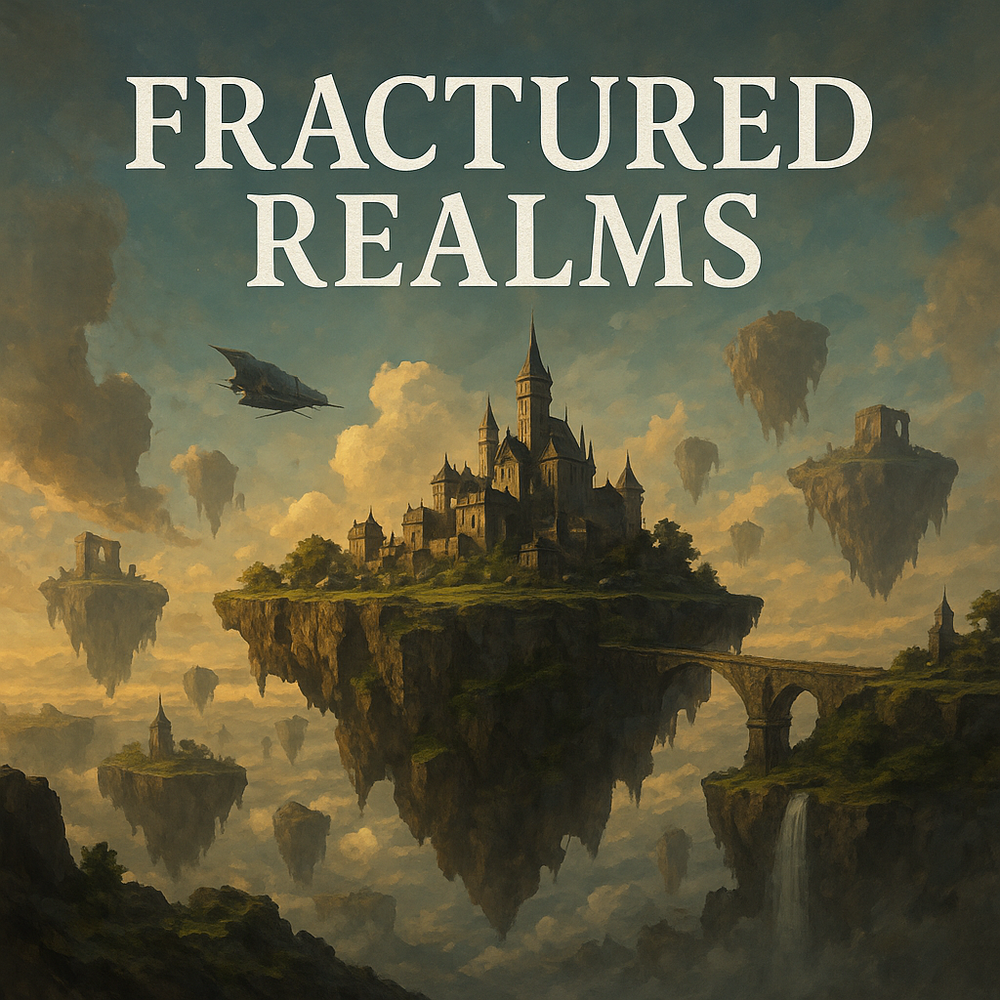
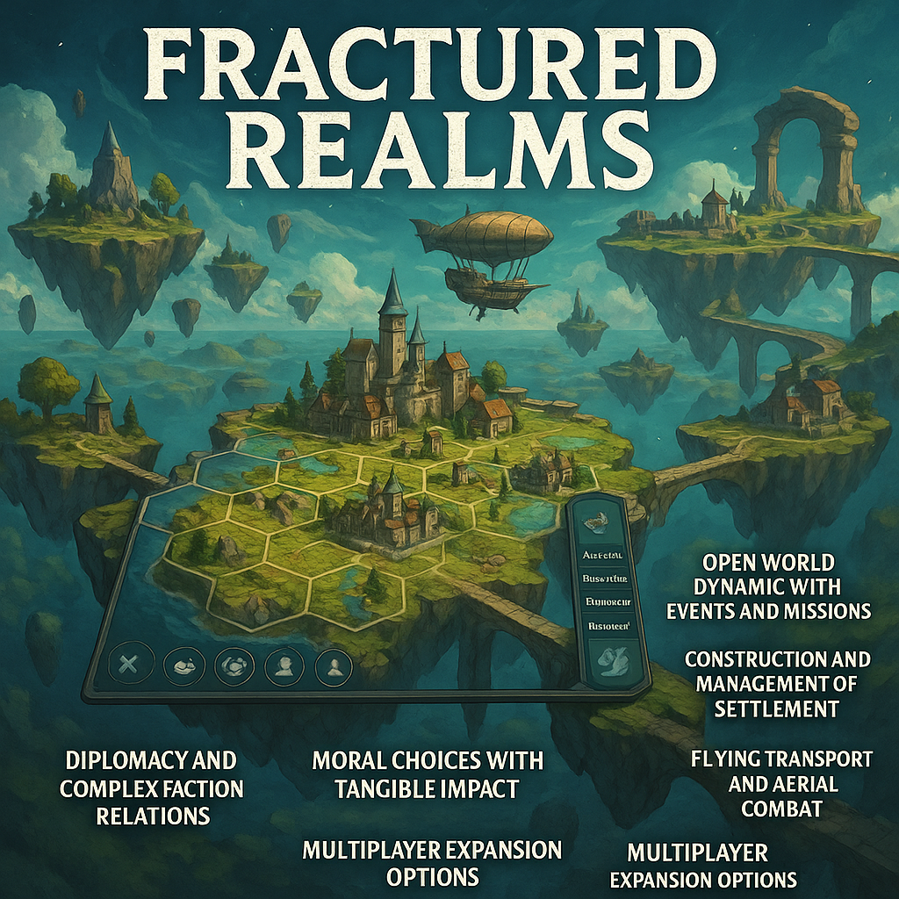
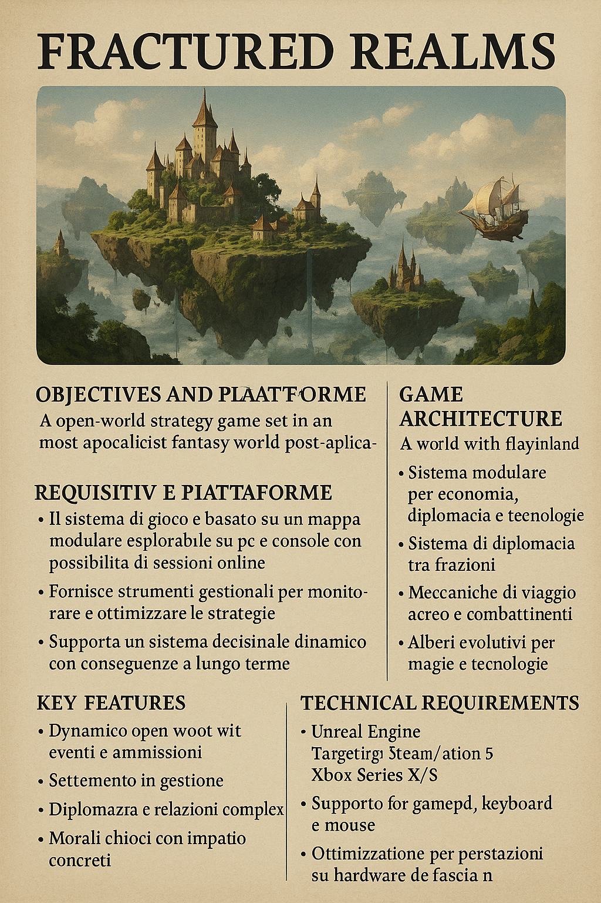

descrizione del progetto
FRACTURED REALMS

E' un gioco strategico open world, ambientato in un mondo fantasy post-apocalittico, composto da isole galleggianti. Il giocatore guida una civiltà verso la sopravvivenza e l'espansione, gestendo risorse, diplomazia, guerre e magie o tecnologia.
-
Sistema di gioco basato su mappa modulare 3D completamente esplorabile;
-
Supporto per PC (Steam), PlayStation 5 e Xbox Series X/S;
-
Possibilità di gioco online e multiplayer;
-
Compatibilità con gamepad, tastiera e mouse;
-
Salvataggio locale e sincronizzazione cloud;
-
Unreal Engine come motore di sviluppo.
-
Isole volanti collegate tramite mezzi di trasporto aereo;
-
Sistema modulare per:
1)Economia
2)Diplomazia
3)Tecnologie e magie
-
Intelligenza artificiale per fazioni e NPC;
-
Sistema di diplomazia dinamico tra fazioni;
-
Viaggio aereo con possibilità di collegamento tra isole;
-
Alberi evolutivi per sviluppo tecnologico e magico.
-
Open world dinamico con eventi randomizzati e missioni;
-
Costruzione e gestione di insediamenti;
-
Diplomazia complessa con relazioni tra fazioni;
-
Scelte morali con impatto sul mondo di gioco;
-
Mezzi di trasporto volanti e combattimenti aerei;
-
Multiplayer espandibile (co-op e PvP).
 
Il giocatore può:
-
Esplorare liberamente le isole con un mezzo volante;
-
Interagire con NPC e oggetti per ottenere missioni e risorse;
-
Ricevere feedback visivo e sonoro durante i combattimenti;
-
Ottenere ricompense al termine di missioni e battaglie;
-
Attivare automaticamente combattimenti a turni entrando in territori ostili.
Il giocatore può:
-
Muovere il proprio mezzo nella mappa 3D per esplorare nuove isole;
-
Sbloccare zone della mappa raggiungendo determinati punti di interesse;
-
Poter atterrare su isole per stablire avamposti e raccogliere risorse locali.
Il giocatore può:
-
Dialogare con NPC per attivare missioni principali e secondarie;
-
Raccogliere bottino e risorse esplorando rovine, dungeon o isole;
Le missioni hanno scelte multiple con effetti sulle relazioni tra fazioni.
Il giocatore può:
-
Accedere all'inventario per gestire e utilizzare gli oggetti raccolti;
-
Equipaggiare armature, armi ed accessori;
-
Salire di livello con l'esperienza accumulata.
Il giocatore può:
-
Salvare il gioco tramite il menu, oppure attraverso un salvataggio automatico alla fine di ogni missione;
-
Caricare una partita salvata dal menu principale.
-
Attore: Giocatore, Sistema;
-
Descrizione: Il giocatore paartecipa a un combattimento a turni contro i nemici;
-
Innesco: Il combattimento si attiva automaticamente dopo essere entrato in un terriotorio ostile;
-
Flusso principale:
1) Esplorare liberamente le isole con un mezzo volante;
2)Interagire con NPC e oggetti per ottenere missioni e risorse;
3)Ricevere feedback visivo e sonoro durante i combattimenti;
4)Ottenere ricompense al termine di missioni e battaglie;
5)Attivare automaticamente combattimenti a turni entrando in territori ostili.
-
Attore: Giocatore, Sistema;
-
Descrizione: Il giocatore accetta, segue e completa una quest principale o secondaria;
-
Flusso principale:
1) Il giocatore parla con un NPC per ricevere una quest;
2) La quest viene aggiunta al diario con gli obiettivi;
3) Il giocatore esplora, raccoglie oggetti e sconfigge nemici,
4) Ritorna all' NPC per completare la missione e ricevere una ricompensa.
-
Attore: Giocatore;
-
Descrizione: Il giocatore accede all'inventario per gestire oggetti in modo avanzato;
-
Flusso principale:
1) Apre l'inventario dal menu;
2) Filtra per tipo di oggetto(consumabili, equipaggiamento);
3) Ordina gli oggetti per nome, rarità, quantità;
4) Visualizza descrizione e statistiche dettagliate.
-
Sistema di movimento libero in mappa 3D;
-
Generazione dinamica delle missioni basate sugli eventi;
-
Interfaccia utente per gestione risorse, costruzioni e unità;
-
Sistema di diplomazia e gestione relazioni tra fazioni;
-
Salvataggio automatico e manuale della partita.
-
Compatibilità multipiattaforma(PC, PS5, XBOX);
-
Tempi di caricamento ridotti grazie a ottimizzazione delle scene;
-
Esperienza utente coerente per dispositivi di input diversi.